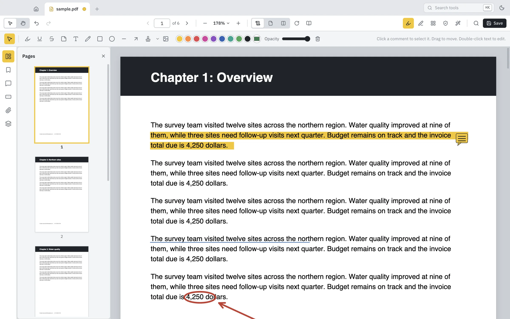
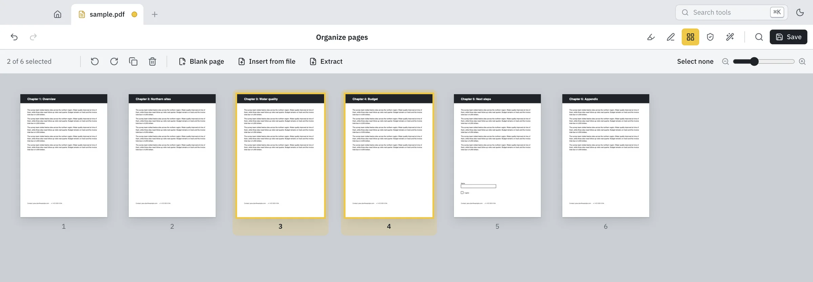
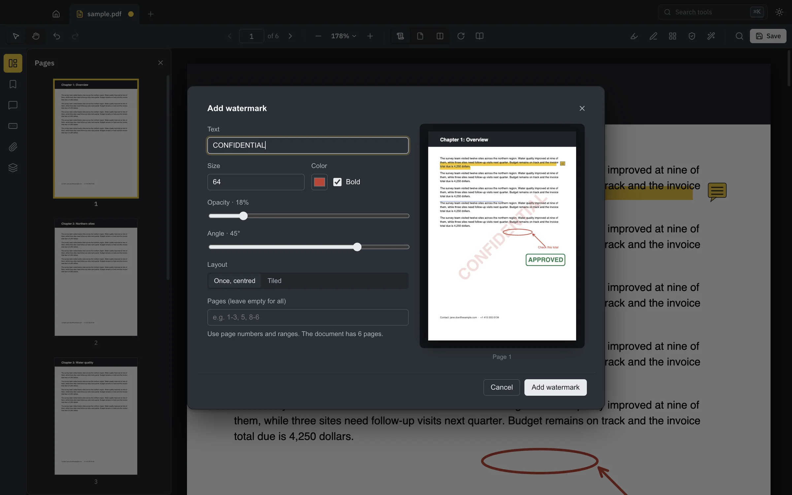
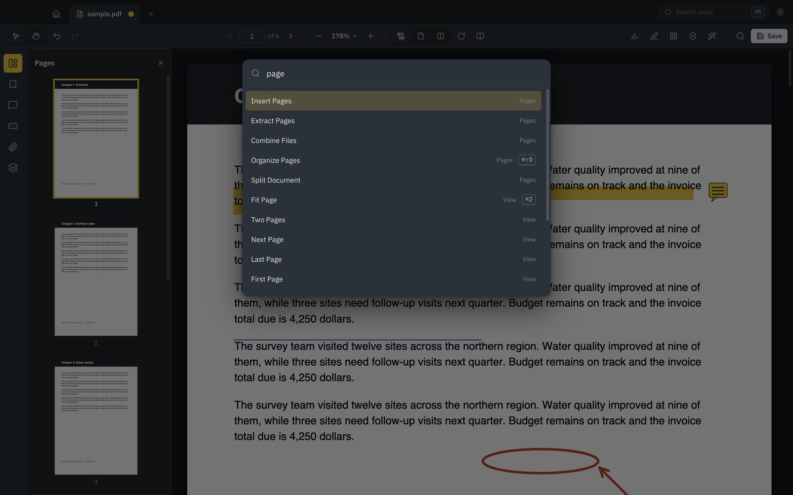

Redaction that really redacts.
Mark areas or search for names, emails, phone and card numbers. When you apply, the content underneath is removed from the file, not just covered with a black box.
Every PDF tool you need.
None of the cloud.

Read it. Mark it up. Sign it. Rearrange it. Lock it. All in one app that never sends your documents anywhere.
Highlight, underline and strike through text. Drop sticky notes, type anywhere, draw freehand, add arrows, shapes, stamps and images. Everything saves as standard annotations, so they look right in every other PDF viewer too.
See every page at once. Drag to reorder. Rotate, delete, duplicate and insert pages from other files. Combine documents, split them apart, or pull out just the pages you need.
And yes, everything can be undone.

Mark areas or search for names, emails, phone and card numbers. When you apply, the content underneath is removed from the file, not just covered with a black box.
Type into forms. Sign by drawing, typing or using a photo of your signature. It’s saved for next time.
Add a password with AES-256 encryption and choose what people can do with the file.
Text recognition turns scanned pages into searchable, selectable text, right on your computer.
Compare two versions of a document. Every change is highlighted, page by page.
Adjust the text, angle and opacity and watch the page update as you go.

Compress without losing quality, or shrink scans down to a fraction of their size.
Turn photos into a PDF. Save pages as PNG or JPEG, or all the text as a .txt file.
Designed for long reading sessions in both themes, with a distraction-free Read mode.
Press ⌘K or Ctrl K and start typing. Every command and tool is right there, with its shortcut.

The same engine ships as pdf-studio-cli, so you can combine, split, rotate, watermark and protect PDFs from scripts.
# merge two reports, with a bookmark for each
$ pdf-studio-cli combine q1.pdf q2.pdf --out year.pdf
# pull out pages 1–3 and 7
$ pdf-studio-cli extract year.pdf --pages 1-3,7 --out summary.pdf
# password protect, no copying
$ pdf-studio-cli protect summary.pdf --password s3cret --no-copy --out locked.pdfFree. Latest release for every platform.
macOS 12 or later
Apple silicon Intel MacWindows 10 or 11
Download installer Portable, no install Windows on ARMUbuntu, Debian, Fedora and more
Ubuntu / Debian (.deb) Fedora / RHEL (.rpm) AppImage, any distro ARM64 (.deb)
On a Mac, if you see “PDF Studio can’t be opened”, right-click the app and choose Open, or run
xattr -dr com.apple.quarantine "/Applications/PDF Studio.app" once.
All files and checksums